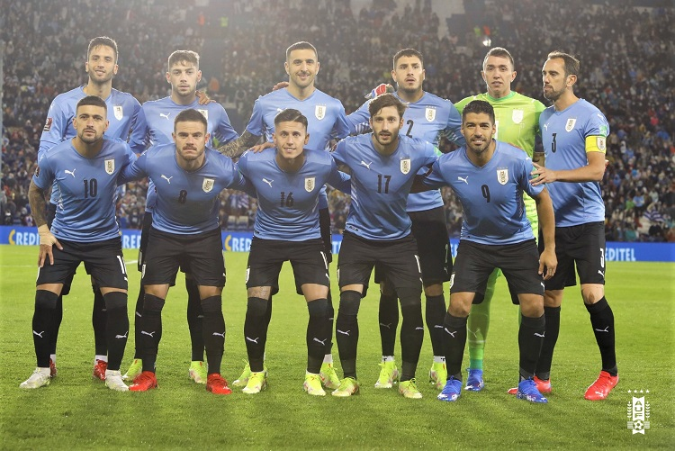

Seleção do Uruguai nas Copas do Mundo
A seleção uruguaia participou de sua 13ª Copa do Mundo de futebol em 2018. A seleção do Uruguai é conhecida como La Celeste Olímpica (A Celeste Olímpica) ou apenas La Celeste. O Uruguai tem dois títulos mundiais (1930 e 1950) e duas medalhas de ouro olímpicas (1924 e 1928), daí a razão das quatro camisas no escudo da equipe. Em 1954, 1970 e 2010 o Uruguai ficou com o 4º lugar no Mundial. A seleção do Uruguai é a maior vencedora da Copa América com 15 títulos.
Foi a primeira seleção, junto à Argentina, a jogar uma partida internacional fora das Ilhas Britânicas, em 20 de julho de 1902 em Montevidéu quando acabou sendo goleada pela Argentina por 6 a 0. Em 1903 veio a primeira vitória sendo um 3 a 2 sobre a Argentina Possui uma das mais gloriosas histórias do futebol mundial, tendo conquistado um total de 19 títulos oficiais, tendo vencido as primeiras competições oficiais de alcance mundial - os torneios olímpicos de futebol de 1924 e 1928 - que lhe deram o apelido de Celeste Olímpica - e a primeira Copa do Mundo, da qual foi o país-sede. Também venceu a edição de 1950, no Brasil, derrotando os donos da casa no episódio conhecido como Maracanazo. O Uruguai também é o recordista de títulos da Copa América, sendo a última em 2011 - foram 15 títulos, incluindo aí a primeira edição do torneio, realizada em 1916. É uma das grandes seleções do futebol mundial, sendo uma das oito campeãs mundiais e destas uma das seis que tem mais de um título, sendo bicampeã da Copa do Mundo e considerada tetracampeã mundial e por isso ostenta quatro estrelas em seu escudo - já que os 2 dois torneios olímpicos conquistados antes da Copa de 1930 eram acreditados como "campeonatos mundiais" também pela FIFA. Até a Copa do Mundo de 2018, o Uruguai já havia se classificado para 13 edições da Copa do Mundo (1930, 1950, 1954, 1962, 1966, 1970, 1974, 1986, 1990, 2002, 2010, 2014 e 2018), o que faz dela a terceira Seleção da América do Sul com mais participações em Copas do Mundo, atrás somente do Brasil e da Argentina.
